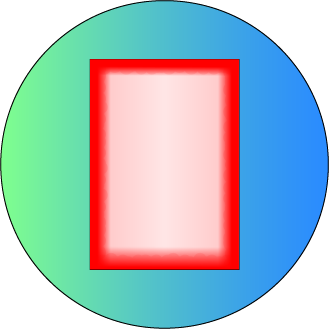

| ・ | player 1 | 10 coin |

player 1 現在は何も所持していません |
|
| ・ | player 2 | 3 coin |
player 2 現在は何も所持していません |
|
| ・ | player 3 | 8 coin |
player 3 現在は何も所持していません |
|
| ・ | player 4 | 15 coin |
player 4 現在は何も所持していません |
投票チケット
残り {{ticket_flag[0]}}枚
残り {{ticket_flag[1]}}枚
残り {{ticket_flag[2]}}枚
残り {{ticket_flag[3]}}枚
残り {{ticket_flag[4]}}枚
サイコロ
1位予想
イマ
{{topforecast_count}}
マイ
最下位予想
イマ
{{bottomforecast_count}}
マイ
・player 1がサイコロを振りました
・黄ラクダが2進みました
{{mass}}